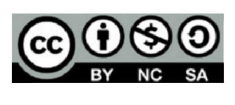

Guía de ciberataquesTodo lo que debes saber a nivel usuario
Índice
Índice
Objetivos de los ciberataques y sus
consecuencias para el usuario 03
Tipos de ciberataques
pág
- Ataques a contraseñas
- Fuerza bruta
05
- Ataque por diccionario
06
-
Ataques por ingeniería social
- Phising,Vising y Smishing
08
- Baiting o Gancho
10
- Shoulder Surfing o mirando por encima del hombro
11
- Dumpster Diving o rebuscando en la basura
12
- Spam o correo no deseado
13
- Fraudes online
14
- Ataques a las conexiones
- Redes trampa(Wifi falsas)
16
- Spoofing o suplantación
- IP Spoofing
18
- Web Spoofing
19
- Email Spoofing
20
- DNS Spoofing
21
- Ataques a cookies
22
- Ataques a DDos
24
- Inyección SQL
26
- Escaneo de puertos
27
- Man in the middle o ataque de intermediario
28
- Sniffing
29
- Ataques por malware
- Virus
31
- Adware o anuncios maliciosos
32
- Spyware o software espía
33
- Troyanos
- Backdoors
35
- Keyloggers
36
- Stealers
37
- Ransomware
38
- Gusano
39
- Rootkit
40
- Botnets o redes zombi
41
- Rogueware o el falso antivirus
42
- Criptojacking
43
- Apps maliciosas
44
Medidas de protección 45
Licencia de contenidos:
“La presente publicación pertenece al Instituto Nacional de Ciberseguridad (INCIBE) y está bajo una licencia Reconocimiento-No comercial-CompartirIgual 4.0 Internacional de Creative Commons. Por esta razón está permitido copiar, distribuir y comunicar públicamente esta obra bajo las condiciones siguientes:
- Reconocimiento. El contenido de esta publicación se puede reproducir total o parcialmente por terceros, citando su procedencia y haciendo referencia expresa a INCIBE y al servicio de la Oficina de Seguridad del Internauta (OSI) y sus sitios web: https://www.incibe.es y https://www.osi.es. Dicho reconocimiento no podrá en ningún caso sugerir que INCIBE presta apoyo a dicho tercero o apoya el uso que hace de su obra.
- Uso No Comercial. El material original y los trabajos derivados pueden ser distribuidos, copiados y exhibidos mientras su uso no tenga fines comerciales.

- Compartir Igual. Si altera o transforma esta obra, o genera una obra derivada, sólo puede distribuirla bajo esta misma licencia.
Al reutilizar o distribuir la obra, tiene que dejar bien claro los términos de la licencia de esta obra. Alguna de estas condiciones pueden no aplicarse si se obtiene el permiso de INCIBE como titular de los derechos de autor. Texto completo de la licencia: https://creativecommons.org/licenses/by-nc-sa/4.0/deed.es_ES.